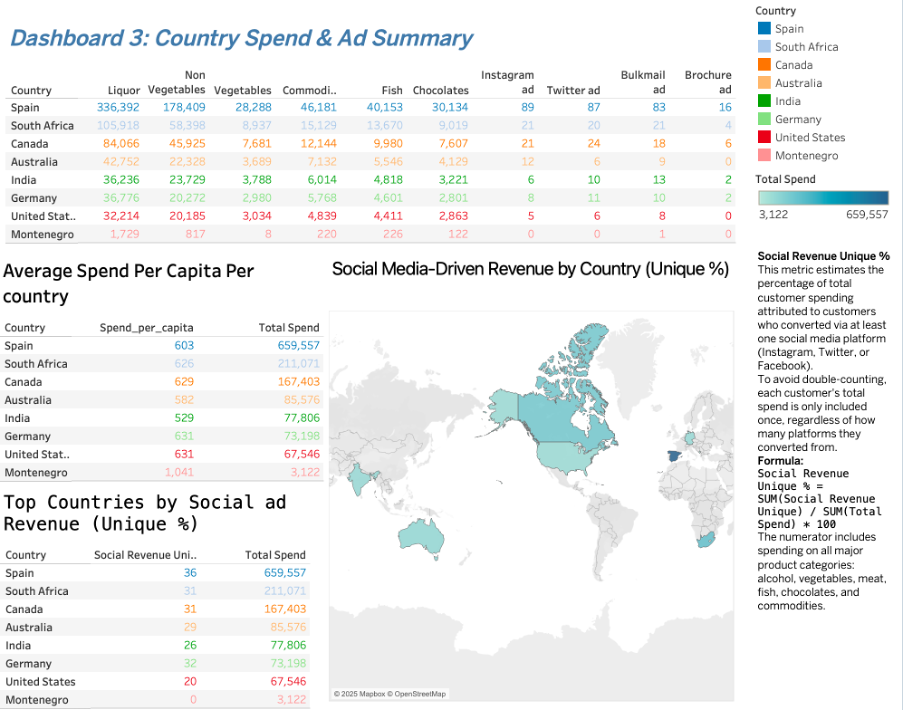

Dashboard Visuals



Data-driven insights on customer behavior, spending patterns, and ad performance — built with R, SQL, Tableau, and Excel.
Explore Findings ↓
• Average customer age: ~55 years (44 if base year 2014)
• Married customers: largest segment (~857, 38.7%)
• Positive correlation between age, income, education
• Master’s and PhD holders spend the most
• Top products: liquor, non-vegetables (especially among married, highly educated)
• Average age: 53 years
• Single and divorced spend the most
• 60% of purchases still in-store
• Instagram is the top-performing ad channel
• No young kids = more premium spending
• Spain leads: $659,557 spend, 36% social ad conversion
• Canada, South Africa ~31% each
• Montenegro: no social conversions